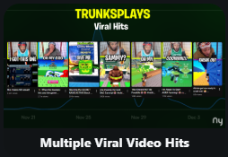
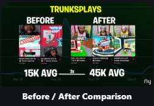
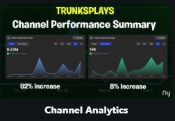
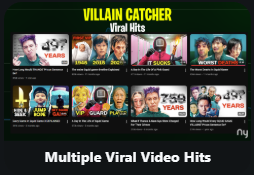
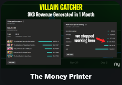
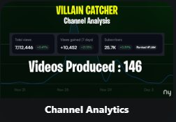
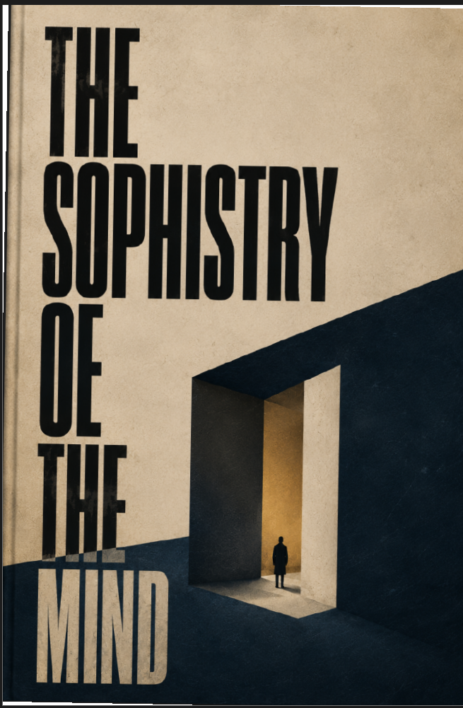

Video editing
Long-form, documentary, gaming, YouTube, shorts and client edits. I handle most formats; AMV-style edits are one of the few areas I do not specialize in.
Professional side · Dhaka · NY Studios
Video editor · storyteller · creative freelancer.
This is the part of me that creates — editing videos, building stories, writing ideas, and working through NY Studios. The work matters, but it is only one side of who I am.
1st Place · Editing Competition. One of the milestones that shaped how I see my work: creating under pressure, trusting my instincts, and finishing first.
I’m a freelance video editor, writer and creative worker. I move between documentary-style pieces, gaming, YouTube, short-form, cash-cow formats and personal writing.
I care about pacing and structure, but I also care about why something feels right. The professional side of this site is the visible part of a much more personal process.
Long-form, documentary, gaming, YouTube, shorts and client edits. I handle most formats; AMV-style edits are one of the few areas I do not specialize in.
Hooks, rhythm, structure and visual momentum — the parts of editing that shape how a story is actually felt.
Personal writing, ideas, philosophy and storytelling. The Sophistry of the Mind is the clearest example of that side of me.
Graphics, thumbnails, motion and visual problem-solving when the idea needs more than a timeline.
CEO
Led the studio and handled creative and operational direction.
CEO & Co-founder
Building a freelance-oriented studio across video, content and creative projects.
A small archive of work completed with NY Studios — finished pieces, direct from the channels where they live.
 01WorkWork 01Open on YouTube ↗
01WorkWork 01Open on YouTube ↗
 02WorkWork 02Open on YouTube ↗
02WorkWork 02Open on YouTube ↗
 03WorkWork 03Open on YouTube ↗
03WorkWork 03Open on YouTube ↗
 04WorkWork 04Open on YouTube ↗
04WorkWork 04Open on YouTube ↗
 05WorkWork 05Open on YouTube ↗
05WorkWork 05Open on YouTube ↗
 06WorkWork 06Open on YouTube ↗
06WorkWork 06Open on YouTube ↗
 07WorkWork 07Open on YouTube ↗
07WorkWork 07Open on YouTube ↗
 08WorkWork 08Open on YouTube ↗
08WorkWork 08Open on YouTube ↗
 09WorkWork 09Open on YouTube ↗
09WorkWork 09Open on YouTube ↗
 10WorkWork 10Open on YouTube ↗
10WorkWork 10Open on YouTube ↗
Creators, studios and collaborators connected to the professional side of my life. The strip keeps moving, like a quiet timeline of the people around the work.
The numbers, case studies and collaborations are here as context — not as the whole identity. NY Studios carries the full commercial story; this page keeps the person in the frame.
videos edited
views generated
Primary editing workflow for long-form, short-form and client work.
Motion graphics, compositing and visual polish when the edit needs more.
Hooks, pacing, structure, emotional beats and visual rhythm.
Clean sound design, balancing and color decisions that keep the final piece cohesive.
Creator results, feedback and supporting evidence from the work showcased through NY Studios.
Let me show you what collaborating with NY Studios accomplished for this client. In just one month, we achieved a 92% increase in views and an 8% growth in subscribers.



If you’re looking for long-term results, we’ve got you covered. Take a look at this channel. We’ve been working together for nearly a year and a half. We started from zero. This is where the channel stands today.



Most YouTube and creator formats: long-form, documentaries, gaming, shorts, social edits, narrated cash-cow content and client-led projects.
AMV-style editing is one of the few formats I do not specialize in.
Yes. Story structure, pacing, scripting, thumbnails and supporting graphics can all be part of the workflow when the project needs them.
Creators, channels, studios and clients looking for a thoughtful editor who can work across multiple content formats.
For professional enquiries, or simply to find the places where I am active online, these are the doors.
Private section
A more honest version of the person behind the work.
This is a frontend privacy gate, not secure authentication.
Personal / unlocked
A personal archive of how I think, create, love, and become — the parts of me that do not fit inside a professional portfolio.
I’m an introverted, analytical and emotionally intense person who works as a video editor, runs NY Studios with my friend, writes, and spends a lot of time studying people, ideas and my own behaviour. I value loyalty, honesty, faith, freedom and growth — while still learning how to balance logic, emotion, attachment, ambition and independence.
Basic things that matter to me.
My recent book project about mastering reasoning without turning logic into an excuse — exploring how reasons, controlled emotion, and calculated behavior can shape perception, influence trust, and affect the way people respond to you.

Video editing, cycling, reading & writing, psychology, philosophy, gaming, music, creative storytelling, spirituality, and spending time with someone I love.
Her
Thoughtful, independent, introverted, and deeply emotional. I question things, study people and human behaviour, and rarely accept a simple answer without looking underneath it.
I am a person of extremes: when something genuinely matters, I rarely approach it halfway. I can be deeply curious, attached, emotional, rational, or committed — sometimes all at once. There is a very analytical mind inside me, and learning how to balance that intensity with humanity is part of who I am becoming.
I’m single. I’m emotionally done with my previous relationship. I’m careful with love now, but I haven’t stopped wanting connection.
“Life is temporary. What remains is what I did with it.”
I see life as temporary. Allah is the creator beyond this universe, and grinding through dunia means little to me compared with ibadat, good deeds, kindness, and living with purpose. I don’t like violence and I naturally avoid harming people, but I believe action can become necessary when circumstances demand it.
I’m financially capable enough to build and lead a family, even though I currently prefer staying alone.
Finding a goal worth committing to, then building something stable around it.
I can get emotionally attached when someone gives me comfort or attention. I tend to expect disappointment, suppress emotions, isolate even when I want connection, and overthink small interactions with people I care about. My practical mindset can also become a weakness in ordinary life: I notice logical errors where people often respond through emotion, and seeing the inconsistency does not make it easier to live with. When I finally feel comfortable, I can become openly emotional and sometimes expect the same in return.
I’m also recovering from porn addiction — a past weakness I still actively fight rather than hide.
Overthinking
Getting too sensitive toward people I love
Becoming emotionally attached too deeply
Possessiveness or insecurity when I care
Letting emotion interfere with judgment
Stubbornness
Isolation
Missing prayers sometimes
I am usually conscious of what I am doing while I am doing it. My mind keeps searching for logic in almost everything, so I can become intensely analytical about people, choices, and myself. I sometimes describe that side of me in extreme terms, but the more useful truth is that I recognise my flaws and remain responsible for them.
I spent too much time away from ordinary human interaction, and somewhere along the way, I stopped approaching people naturally. Instead of simply getting close to someone, I began studying how closeness could be constructed. My social behavior became a kind of internal security system: I would create small situations, observe how a person reacted, and use the result to decide whether they were worth trusting. Sympathy became a way of creating attention and a special place in someone's mind through small, noticeable acts of care. Honesty became a calculated form of trust — revealing just enough of myself to make the other person feel that I had trusted them first, hoping that their own instinct would make them protect that trust. Helping someone became another form of positioning myself as useful and reliable, sometimes going beyond what was necessary because I knew usefulness could create familiarity, respect, and future reciprocity. I rarely revealed my complete self, because keeping parts of myself hidden felt safer than allowing another person to possess everything they knew about me.
The most complicated part was care itself. Sometimes I could behave as though I deeply cared for someone even when I was consciously thinking about the behavior as a strategy. I could comfort them, remember small details, offer support, and create a place in their mind where I felt safe and important. From the outside, it could look completely natural. Inside, however, I was aware that I was constructing something. I wasn't always sure whether I was expressing a genuine feeling or simply reproducing the shape of one because I understood what it could do.
This is probably where my isolation affected me most: I became so accustomed to observing human emotions from the outside that I sometimes learned to imitate them before I learned how to simply experience them. Still, I know this system was not created purely to harm people. At its core was caution — the belief that trust should be earned, danger should be anticipated, and closeness should never happen without some form of protection.
Perhaps that system is only a phase of my personality. More human interaction, new experiences, and genuine relationships may eventually teach me something that analysis alone never could: sometimes a person does not need to be tested, calculated, or engineered. Sometimes they can simply be known.
13 / Core identity
I tend to lead with logic and construct emotion when I do not naturally feel it. My core values are loyalty and honesty, even when my way of navigating people can be analytical, guarded, and difficult to explain.
Private / Relationship profile
I do not treat love like a casual phase. Once someone becomes real to me, loyalty, trust, responsibility and a shared future start to matter together.
When I commit, I think long-term rather than treating the relationship as temporary.
I remember details, preferences, dates and small moments that become meaningful later.
I naturally want to support someone through difficult moments instead of disappearing when things get hard.
When I realise I am wrong, I can apologise, rethink my behaviour and try to change it.
Small details, important dates, preferences and ordinary moments tend to stay with me. I like making the person I love feel specifically understood, not generically cared for.
My instinct is usually to stay close, understand what happened and help instead of simply walking away.
I have learned that caring for someone does not give me the right to control their decisions. Their freedom and happiness still matter to me.
When I genuinely commit, I picture a future together. Love becomes part of how I think about life rather than something I switch on for a moment.
When I genuinely love someone, the rational rules I normally rely on can stop working the same way. I may support, excuse, or emotionally defend things I would question from anyone else — because love changes what I am willing to accept.
I can overreact when something matters deeply to me, especially when I feel ignored, rejected or misunderstood.
Concern can sometimes look controlling. Early in a relationship, I may even use emotional pressure to get the response I want. I recognise that as a flaw, not something to justify.
I can become possessive, dependent on reassurance, and too emotionally invested in another person's attention.
I tend to analyse small changes in tone, messages and behaviour, sometimes finding meanings that may not actually be there.
I can hold onto old incidents for too long and carry them into a present situation that is not really the same one.
I sometimes expect the same level of effort, loyalty or emotional intensity that I give, which can become unrealistic.
I observe personality, communication style, habits, boundaries and expectations, then adjust my approach so the interaction works better.
I can understand very different personalities and adapt quickly without needing everyone to communicate the same way.
Adapting too much can make me lose track of what I personally want, need or believe.
That applies to romance, friendship, business and creative work. I value loyalty, trust, honesty, communication and mutual respect.
I would rather hear an uncomfortable truth than be kept comfortable with a lie.
I am willing to take responsibility, solve problems independently and carry my part of the work.
I can become very particular when I believe something should be done differently, and I sometimes push that idea too hard.
I do not see partnership as simply splitting tasks. I want both people to feel genuinely invested in what they are building.
Curiosity starts it. I notice details and begin thinking about the person more often.
I replay small interactions, imagine possibilities and become interested in knowing them deeply.
The person becomes emotionally important to my daily life, and my loyalty, affection and future-thinking intensify.
I start thinking less about the present moment and more about whether we can build a life together.
My first serious attraction taught me how quickly one person can occupy the mind. It was mostly curiosity, excitement and imagined possibilities.
My second crush did not remain a crush. That attraction became my first real relationship and my first experience of being someone's partner. What started as a deeper attachment became something much more serious, bringing closeness, conflict, distance, reconnection and uncertainty — and revealing both my strongest capacity for love and my strongest emotional weaknesses.
Physical distance is manageable when I feel emotionally secure. Uncertainty and emotional disconnection are much harder.
My first reaction can be emotional, especially when I think the relationship is threatened. After I calm down, I become much more reflective.
A breakup can feel like losing not only a person but an imagined future, routines, memories and a version of myself that existed inside the relationship.
I tend to replay what happened, withdraw and think deeply. With time, the intensity changes and the lesson becomes clearer.
08 / The balance I am trying to build
“Loyal without being possessive. Protective without being controlling. Affectionate without becoming dependent. Committed without losing myself.”
I want to be able to love intensely without letting intensity decide every action. That balance is still something I am learning.
10 / A note about me
I rarely approach something halfway when it genuinely matters to me. I can be deeply emotional and then intensely rational about the same thing. I can want complete freedom while craving certainty, want closeness while needing solitude, and adapt quickly while still trying to protect my identity.